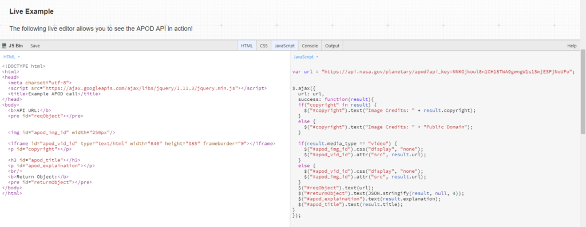
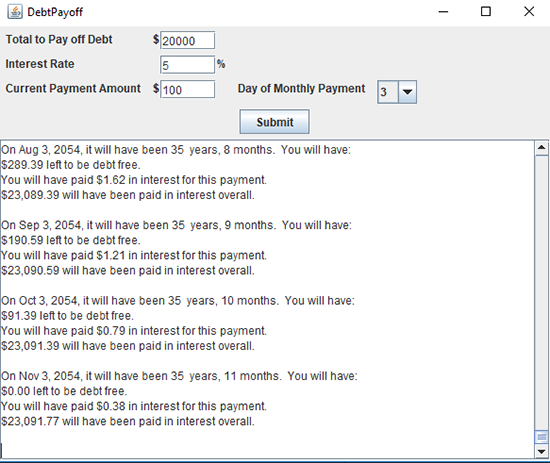
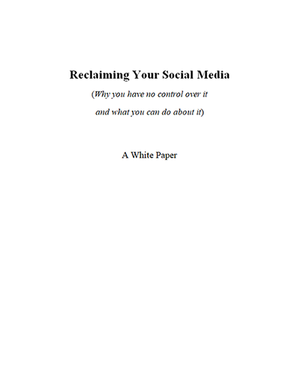

Technical Writer – Developer Docs / APIs
| Resume | LinkedIn | GitHub | Amazon |
Resources for “Creating an Online Portfolio” STC Presentation
Summary of Skills
For experience with these, see my resume
- Managing projects with multiple subject matter experts and stakeholders.
- Documenting SDKs and APIs, including OpenAPI specs and Swagger.
- Integrating code into documentation (Java, Python, JavaScript, command-line scripts).
- Writing docs for overviews, concepts, guides, quick-starts, tutorials, and reference.
- Reading and writing code in Java and Python.
- Working with Linux on the desktop and command-line.
- Writing in HTML and markdown.
- Constructing information architecture, writing proposals, gap analyses, and other planning docs.
- Integrating into developer flows, using source control management (including git), bug tracking, and other such tools.
- Creating and revising UML sequence diagrams.
- Publishing with static site generators.
Portfolio Items
APIs using OpenAPI (Swagger)

I used and documented several API’s, including the use of OpenAPI and Swagger. See my resume for much more detailed API documentation.
DebtPayoff - A program to help with credit card debt

An open source Java program I wrote
Whitepaper

A whitepaper I wrote for a startup on social media and blockchain